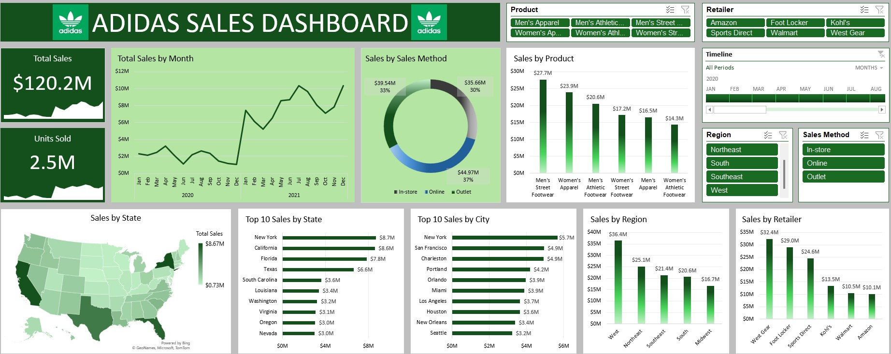

This project analyzes 2015 crime data from Orem, Utah, revealing incident types, timings, and theft/assault info to guide police staffing and help citizens assess their risk levels.
Full Description


This project demonstrates my process for cleaning a dataset for analysis using SQL, including restructuring, modifying data types, splitting columns, converting timestamps, updating missing values, and more.
Full Description

This repository on GitHub holds three different projects completed in Excel that demonstrate my skills using the software for tasks such as data analysis to tax credit calculation. Full descriptions in each file included.
Sales Performance Analysis
Churn Analysis
ERC Calculation
This project completed in Tableau analyzes the number of tornados that occured in the United States from 1950 to 2022. Tornado counts by month and year as well as fatalities and propery loss info are displayed.
Full Description

This project demonstrates the use of SQL functions like CTEs, window functions, subqueries, and joins to analyze credit card data and uncover trends for fraud prevention and revenue growth.
Full Description

This project shows a sales dashboard completed in Power BI for a fictitious retail company to show the use of the software for building reports on various KPIs.
Full Description

This project showcases the use of the python BeautifulSoup library to scrape a website with data on the top common first and last names in the US. The analysis examines frequently used names for both males and females within the country.
Full Description